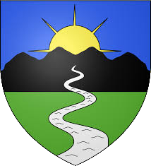
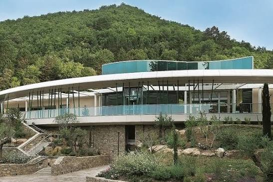

Lamalou
les-BainsLa Belle Époque thermale au pied du Caroux


⟹ Thermalisme & Art de Vivre ⟸

Contrairement à la plupart des villes d'eaux françaises, Lamalou-les-Bains n'a pas d'origine romaine. Ses sources thermales apparaissent par hasard aux XIe et XIIe siècles, lorsque des mineurs, en creusant des galeries à la recherche de cuivre et d'argent dans la colline de l'Usclade, mettent au jour une eau chaude réputée miraculeuse. La tradition raconte qu'un paysan souffrant de douleurs se serait baigné dans la mare boueuse ainsi formée et en aurait retiré un soulagement inattendu.

Le site n'est mentionné comme ville d'eau qu'en 1702. En 1709, le seigneur du Poujol, Pons Marthe de Thézan, achète la source et inaugure le premier établissement thermal. Deux autres établissements suivent, à Lamalou-le-Haut en 1842 et Lamalou-le-Centre en 1868. À partir du milieu du XIXe siècle, des médecins célèbres de la Faculté de Montpellier, dont Jean-Martin Charcot et Duchenne de Boulogne, mettent en lumière l'intérêt thérapeutique de ces eaux : la station devient alors la 4e de France par le nombre de ses visiteurs et attire une clientèle internationale, dont des hommes de lettres comme André Gide et Alphonse Daudet.
Au XXe siècle, la vocation de la station évolue : la ville rachète l'établissement thermal en 1947, et à partir de 1954, la Sécurité sociale y crée des centres de rééducation fonctionnelle, faisant de Lamalou l'une des grandes stations françaises de traumatologie. La Chaîne thermale du Soleil reprend l'exploitation en 1986.
Classée Station de Tourisme depuis 2014, Lamalou-les-Bains conserve aujourd'hui tout l'éclectisme architectural de la Belle Époque : grands hôtels, thermes, théâtre à l'italienne et casino racontent encore les fastes de cette époque insouciante.
Lamalou-les-Bains puise sa réputation dans plus de 15 sources qui s'échelonnent le long d'une faille géologique traversant le vallon. Ces eaux bicarbonatées calciques et sodiques, ferrugineuses, riches en magnésium et en potassium, sont utilisées à l'état natif et ont valu à la station l'attention des plus grands neurologues du XIXe siècle.
La station est alors quatrième station française par le nombre de ses visiteurs, et l'une des premières du monde pour la qualité de ses prestations.
— d'après l'historique de la commune de Lamalou-les-BainsCe savoir-faire thermal s'accompagne d'une tradition artistique bien vivante : le théâtre de Lamalou, dit « à l'italienne », perpétue depuis plus d'un siècle l'art de l'opérette, de Jacques Offenbach à Franz Lehár, dans un cadre 1900 resté quasiment intact.
Saint-Michel-de-Mourcairol vieilles murailles fortifiées d'une cité médiévale en ruines, avec un panorama impressionnant sur la garrigue héraultaise.
Massifs du Caroux et de l'Espinouse montagnes emblématiques du Haut-Languedoc, terrain de jeu des randonneurs et des amateurs de faune sauvage.
Bédarieux ville voisine réputée pour ses balcons et son patrimoine, à quelques minutes de Lamalou.
Voie verte de l'Orb ancienne voie ferrée réaménagée pour la promenade et le vélo entre paysages et patrimoine minier.